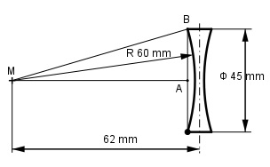

Aufgabe 384 Wie groß ist die gekrümmte Fläche A der symmetrischen Doppeltkonkavlinse?

Satz von Pythagoras im Dreieck MAB: MB = r AB = 45 mm/2 = 22,5 mm MB2 = MA2 + AB2 |-AB2 MA2 = MB2 - AB2 = = 602 mm2 - 22,52 mm2 = 3 093,75 mm2 |√ MA = 55,6 mm Höhe h eines Kugelabschnitts: h = 60 mm - 55,6 mm = 4,4 mm A = 2 * 2 * л * r * h = = 2 * 2 * л * 60 mm * 4,4 mm = 3 316 mm2 A = 33,2 cm2